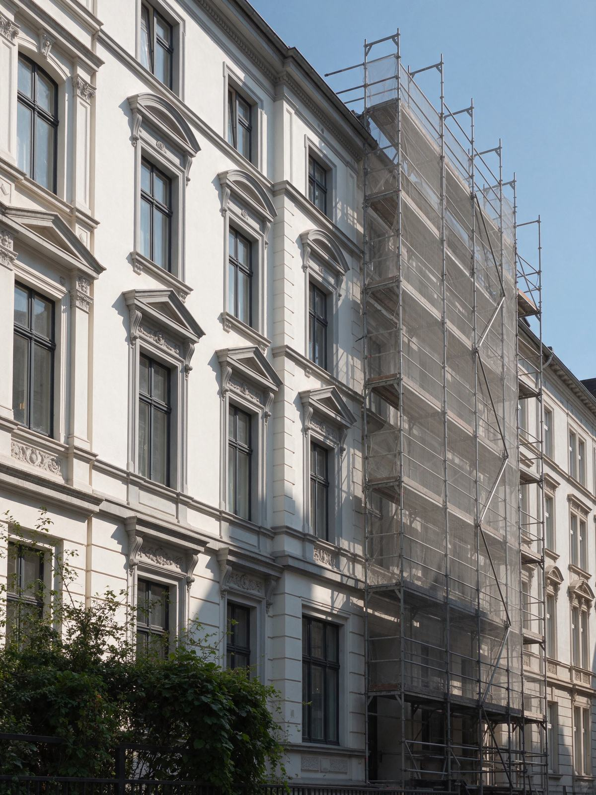
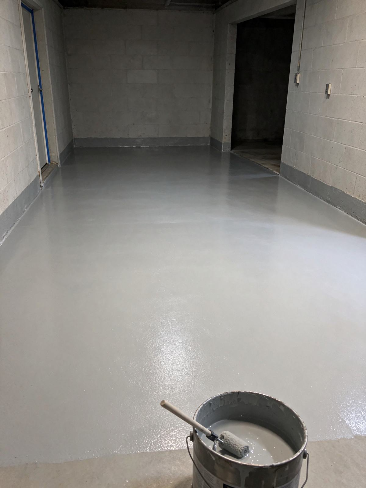
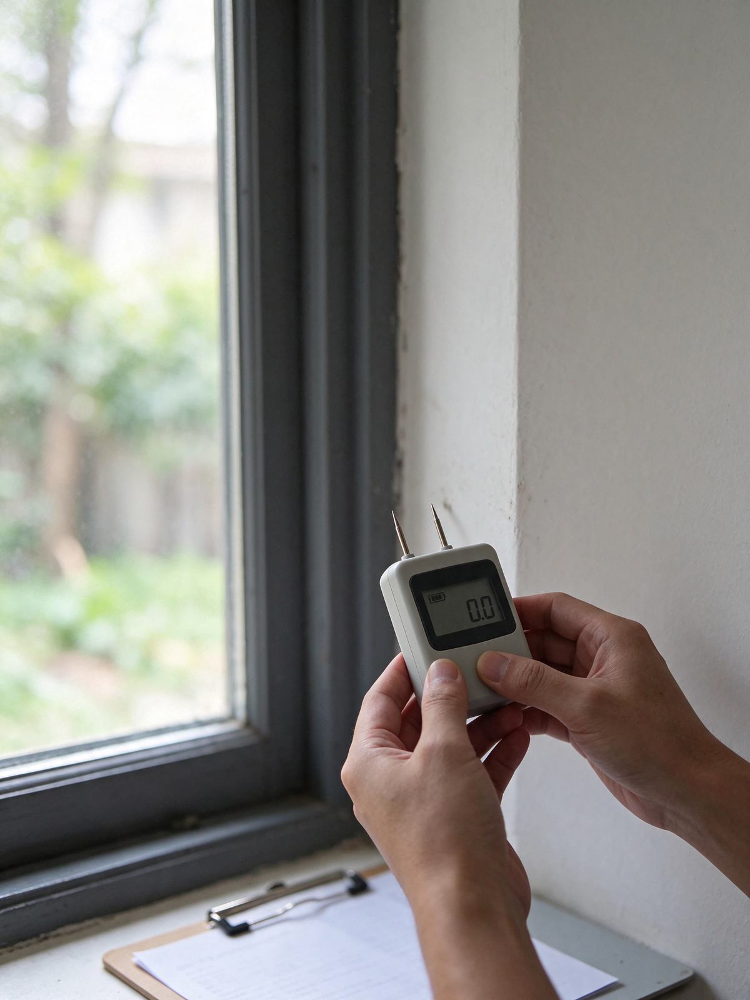
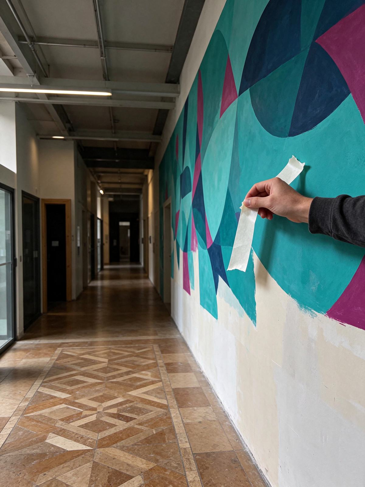

Meisterbetrieb
Malermeister und Mitglied der Innung Köln. Ausgebildetes Personal, kein Subunternehmer-Karussell.
Malermeister seit 1996
Wir streichen, lackieren, tapezieren und spachteln für Privatleute, Hausverwaltungen und Firmen. Sauber, pünktlich und mit festen Ansprechpartnern aus Köln-Zollstock.

Vom einzelnen Zimmer bis zur kompletten Wohnung, vom Treppenhaus bis zur Fassade. Zehn Gewerke, ein Betrieb, ein Ansprechpartner.

Abdecken, ausspachteln, grundieren, streichen. Am Ende ist alles besenrein.

Türen, Fenster, Zargen, Heizkörper. Schleifen, grundieren, zweimal lackieren.

Raufaser, Vlies und Designtapeten. Alte Bahnen runter, Untergrund vorbereiten.

Caparol Antik- und Arte-Lasur, Spachtelschläge, die man sehen darf.

Anstrich und Ausbesserung außen, mit festem Gerüstpartner.

Jeder Ton direkt an der Wand abgelesen, zu 98 % genau, in 1–2 Werktagen gemischt.

CV, Linoleum, Kautschuk, Parkett, Laminat. Beschichtungen für Garage und Keller.

Mit Feuchtemessung und Protokoll. Geprüfte Sachkunde (Innung 2007, TÜV 2013).

Schonend mit Reinigern oder Strahlgut, auf Wunsch mit Schutzanstrich.

Ihr Firmenlogo in Negativfolien-Technik, gestochen scharf gemalt.
Und wenn mehr dran ist: Trockenbau machen wir selbst, Sanitär, Heizung, Fliesen und Elektro mit festen Partnern. Komplett-Renovierung anfragen
Fünf Schritte vom ersten Anruf bis zur besenreinen Übergabe. Sie haben die ganze Zeit dieselben Ansprechpartner.
Wir kommen zu Ihnen, sehen uns Räume und Untergrund an und nehmen Maß. Danach bekommen Sie ein schriftliches Angebot.
Sie haben einen Wunschton, aber keinen Namen dafür? Wir lesen ihn mit dem Brillux MF 100 direkt an der Wand oder am Kissen ab.
Die Farbe wird genau nach Messung gemischt und ist in 1–2 Werktagen fertig.
Möbel und Böden werden abgedeckt, Löcher gespachtelt, grundiert, dann zweimal gestrichen.
Wir gehen gemeinsam durch, räumen auf und hinterlassen alles besenrein.
Von Zollstock aus in ganz Köln und im Umland. Ihr Ort fehlt? Rufen Sie trotzdem an.
1996 hat Ralf Berg allein angefangen. Heute ist die Maler Berg GmbH ein Meisterbetrieb der Maler- und Lackierer-Innung Köln mit eigenem Team, eigener Werkstatt in Zollstock und festen Partnern für alles, was über Farbe hinausgeht.

Gearbeitet haben wir unter anderem für die Dombauhütte Köln, die Kölner Haie, Gaffel, Früh am Dom, Thomas Sabo, GAG Immobilien, das Aqualand und das Deutsche Rote Kreuz. Und für sehr viele Kölner Wohnzimmer.
Einen Maler zu finden ist leicht. Einen, der pünktlich kommt und sauber hinterlässt, ist es nicht.
Malermeister und Mitglied der Innung Köln. Ausgebildetes Personal, kein Subunternehmer-Karussell.
Messgerät statt Augenmaß: 98 % Treffsicherheit, auch für Farben, die es in keinem Fächer mehr gibt.
Wir decken ab, bevor wir anfangen, und räumen auf, bevor wir gehen. Dafür gibt es 250 sehr gute Bewertungen.
Schriftlich und nachvollziehbar, Position für Position. Sie wissen vorher, was es kostet.
Vom ersten Anruf bis zur Übergabe sprechen Sie mit denselben Leuten.
Rufen Sie an oder schreiben Sie an info@maler-berg.de. Wir kommen vorbei und machen Ihnen ein Angebot.

Das hängt von Fläche, Untergrund und Aufwand ab: Ist nur zu streichen oder müssen erst Risse gespachtelt und Tapete entfernt werden? Wir kommen vorbei, sehen es uns an und schicken Ihnen ein schriftliches Angebot.
Wir messen den Ton mit dem Brillux MF 100 direkt am Vorbild. Die Farbe ist dann in 1–2 Werktagen gemischt.
Nein. Wir rücken Möbel zur Seite und decken Möbel und Böden ab. Kleine, zerbrechliche Dinge räumen Sie am besten vorher weg.
Wir messen die Feuchte und protokollieren den Befund. Für dieses Angebot erheben wir eine Gebühr, die bei Auftrag angerechnet wird.
Ja. Trockenbau und Böden machen wir selbst, für Sanitär, Heizung, Fliesen und Elektro arbeiten wir mit festen Partnern. Sie haben trotzdem nur einen Ansprechpartner.